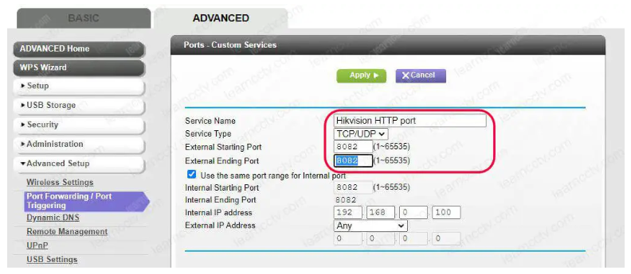

Port Forwarding en Network Address Translation (NAT) gaan hand in hand. Voor de volledigheid herhalen we even kort het basisprincipe van NAT.
Bij NAT proberen we de IPv4 tekortkoming van 'slechts' 4 miljard mogelijke IP adressen te verbergen door enkel de machines die rechtstreeks verbonden zijn met het internet (zoals onze router) een publiek IP adres te geven. De machines binnen het LAN krijgen op hun beurt een privaat IP adres toegekend van de router.
Als je toch een servertoepassing wil beschikbaar maken vanaf een machine binnen het LAN dan kan dit op het eerste gezicht niet omdat deze geen publiek IP adres heeft. Enkel de router heeft een publiek IP adres gekregen van de internetprovider en de machines binnen het LAN zijn dus onbereikbaar van buitenaf.
Wat we gaan doen bij port forwarding is de router zodanig instellen dat hij verkeer bestemd voor het publiek IP adres op een bepaalde poort doorstuurt naar een privaat IP adres op dezelfde (of een andere) poort.

In formulevorm: Publiek IP + POORT X = Privaat IP + POORT Y.
De router neemt dus alle vertaalwerk op zich. Het enige waar wij voor moeten zorgen is dat het interne private IP adres niet wijzigt. Dit kunnen we makkelijk doen door DHCP uit te zetten op de interne machine en manueel het IP adres te configureren.
Een bijkomende optie is om enkel TCP, enkel UDP of beide door te sturen. Dit hangt af van het type transport protocol dat gebruikt wordt door de applicatie.